00. 目录01. 学习目标02. Makefile简介 03. Makefile语法规则04. make命令格式05. Makefile工作原理06. Makefile示例07. Makefile中的变量08. Makefile中的函数09. Makefile中的伪目标10. 系统调用简介和实现11. 系统调用和库函数的区别12. C库中IO函数工作流程13. 错误处理函数14. 虚拟地址空间15. 文件描述符16. 常用文件IO函数16.1 open函数16.2 close函数16.3 write函数 16.4 read函数16.5 lseek函数17. 扩展-ctags使用18. 作业
一个工程中的源文件不计其数，其按类型、功能、模块分别放在若干个目录中，makefile定义了一系列的规则来指定，哪些文件需要先编译，哪些文件需要后编译，哪些文件需要重新编译，甚至于进行更复杂的功能操作，因为 makefile就像一个Shell脚本一样，其中也可以执行操作系统的命令。
Makefile带来的好处就是——“自动化编译”，一旦写好，只需要一个make命令，整个工程完全自动编译，极大的提高了软件开发的效率。make是一个命令工具，是一个解释makefile中指令的命令工具，一般来说，大多数的IDE都有这个命令，比如：Delphi的make，Visual C++的nmake，Linux下GNU的make。可见，makefile都成为了一种在工程方面的编译方法。
make主要解决两个问题：
1) 大量代码的关系维护
大项目中源代码比较多，手工维护、编译时间长而且编译命令复杂，难以记忆及维护
把代码维护命令及编译命令写在makefile文件中，然后再用make工具解析此文件自动执行相应命令，可实现代码的合理编译
2) 减少重复编译时间
n 在改动其中一个文件的时候，能判断哪些文件被修改过，可以只对该文件进行重新编译，然后重新链接所有的目标文件，节省编译时间
Makefile文件命名规则
makefile和Makefile都可以，推荐使用Makefile。
make工具的安装
sudo apt install make
一条规则：
目标：依赖文件列表
命令列表
Makefile基本规则三要素：
1）目标：
2）依赖文件：
3）命令：
举例说明：
测试代码：
x
1test:2 echo "hello world"x
1test:test1 test22 echo "test"3test1:4 echo "test1"5test2:6 echo "test2"
make是一个命令工具，它解释Makefile 中的指令（应该说是规则）。
make命令格式：
make [ -f file ][ options ][ targets ]
1.[ -f file ]：
l
2.[ options ]
3.[ targets ]：
示例：
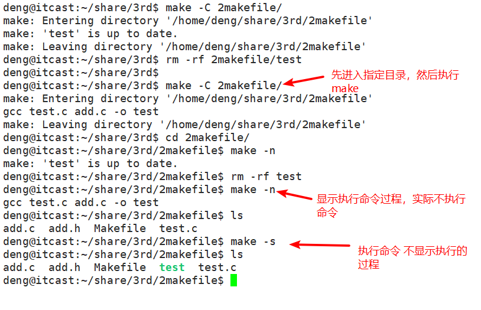
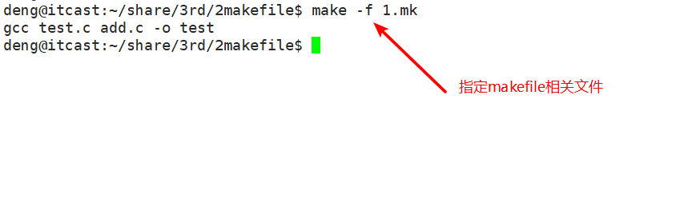
1）若想生成目标, 检查规则中的依赖条件是否存在,如不存在,则寻找是否有规则用来 生成该依赖文件
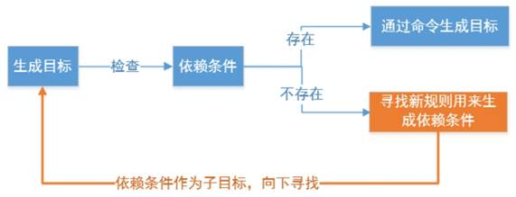
2） 检查规则中的目标是否需要更新，必须先检查它的所有依赖,依赖中有任一个被更新,则目标必须更新
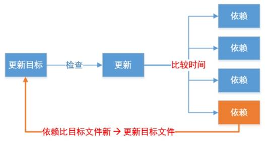
总结：
Ø 分析各个目标和依赖之间的关系
Ø 根据依赖关系自底向上执行命令
Ø 根据修改时间比目标新,确定更新
Ø 如果目标不依赖任何条件,则执行对应命令,以示更新
测试程序： test.c add.c sub.c mul.c div.c
6.1 最简单的Makefile
xxxxxxxxxx21test:test.c add.c sub.c mul.c div.c2 gcc test.c add.c sub.c mul.c div.c -o test缺点：效率低，修改一个文件，所有文件会被全部编译
6.2 第二个版本Makefile
x1test:test.o add.o sub.o mul.o div.o2 gcc test.o add.o sub.o mul.o div.o -o test34test.o:test.c5 gcc -c test.c6add.o:add.c7 gcc -c add.c8sub.o:sub.c9 gcc -c sub.c10mul.o:mul.c11 gcc -c mul.c12div.o:div.c13 gcc -c div.c
在Makefile中使用变量有点类似于C语言中的宏定义，使用该变量相当于内容替换，使用变量可以使Makefile易于维护,修改内容变得简单变量定义及使用。
7.1 自定义变量
1）定义变量方法：
变量名=变量值
2）引用变量：
$(变量名)或${变量名}
3）makefile的变量名：
示例：
xxxxxxxxxx251#变量2OBJS=add.o sub.o mul.o div.o test.o3TARGET=test45$(TARGET):$(OBJS)6 gcc $(OBJS) -o $(TARGET) 78add.o:add.c9 gcc -c add.c -o add.o1011sub.o:sub.c12 gcc -c sub.c -o sub.o1314mul.o:mul.c15 gcc -c mul.c -o mul.o1617div.o:div.c18 gcc -c div.c -o div.o1920test.o:test.c21 gcc -c test.c -o test.o2223clean:24 rm -rf $(OBJS) $(TARGET)25除了使用用户自定义变量，makefile中也提供了一些变量（变量名大写）供用户直接使用，我们可以直接对其进行赋值。
CC = gcc #arm-linux-gcc
CPPFLAGS : C预处理的选项 如:-I
CFLAGS: C编译器的选项 -Wall -g -c
LDFLAGS : 链接器选项 -L -l
7.2 自动变量
注意：自动变量只能在规则的命令中中使用
参考示例：
xxxxxxxxxx351#变量2OBJS=add.o sub.o mul.o div.o test.o add.o3TARGET=test4CC=gcc56#$@: 表示目标7#$<: 表示第一个依赖8#$^: 表示所有的依赖910$(TARGET):$(OBJS)11 #$(CC) $(OBJS) -o $(TARGET) 12 $(CC) $^ -o $@13 echo $@14 echo $<15 echo $^1617add.o:add.c18 $(CC) -c $< -o $@ 1920sub.o:sub.c21 $(CC) -c $< -o $@ 2223mul.o:mul.c24 $(CC) -c $< -o $@ 2526div.o:div.c27 $(CC) -c $< -o $@ 2829test.o:test.c30 $(CC) -c $< -o $@3132clean:33 rm -rf $(OBJS) $(TARGET)3435
7.3 模式规则
模式规则示例:
%.o:%.c
$(CC) -c $(CFLAGS) $(CPPFLAGS) $< -o $@
Makefile第三个版本：
xxxxxxxxxx71OBJS=test.o add.o sub.o mul.o div.o2TARGET=test3$(TARGET):$(OBJS)4 gcc $(OBJS) -o $(TARGET) 56%.o:%.c7 gcc -c $< -o $@
makefile中的函数有很多，在这里给大家介绍两个最常用的。
- wildcard – 查找指定目录下的指定类型的文件
src = $(wildcard *.c) //找到当前目录下所有后缀为.c的文件,赋值给src
- patsubst – 匹配替换
obj = $(patsubst %.c,%.o, $(src)) //把src变量里所有后缀为.c的文件替换成.o
在makefile中所有的函数都是有返回值的。
Makefile第四个版本：
x
1SRC=$(wildcard *.c)2OBJS=$(patsubst %.c, %.o, $(SRC))3TARGET=test4$(TARGET):$(OBJS)5 gcc $(OBJS) -o $(TARGET) 67%.o:%.c8 gcc -c $< -o $@
clean用途: 清除编译生成的中间.o文件和最终目标文件
make clean 如果当前目录下有同名clean文件，则不执行clean对应的命令，解决方案：
Ø 伪目标声明: .PHONY:clean
声明目标为伪目标之后，makefile将不会该判断目标是否存在或者该目标是否需要更新
clean命令中的特殊符号：
Makefile第五个版本：
xxxxxxxxxx111SRC=$(wildcard *.c)2OBJS=$(patsubst %.c, %.o, $(SRC))3TARGET=test4$(TARGET):$(OBJS)5 gcc $(OBJS) -o $(TARGET) 67%.o:%.c8 gcc -c $< -o $@9.PHONY:clean10clean:11 rm -rf $(OBJS) $(TARGET)
总结： 一条规则，两个函数，三个变量。
10.1 什么是系统调用
系统调用，顾名思义，说的是操作系统提供给用户程序调用的一组“特殊”接口。用户程序可以通过这组“特殊”接口来获得操作系统内核提供的服务，比如用户可以通过文件系统相关的调用请求系统打开文件、关闭文件或读写文件，可以通过时钟相关的系统调用获得系统时间或设置定时器等。
从逻辑上来说，系统调用可被看成是一个内核与用户空间程序交互的接口——它好比一个中间人，把用户进程的请求传达给内核，待内核把请求处理完毕后再将处理结果送回给用户空间。
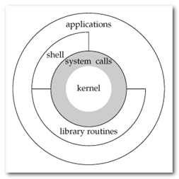
系统服务之所以需要通过系统调用来提供给用户空间的根本原因是为了对系统进行“保护”，因为我们知道 Linux 的运行空间分为内核空间与用户空间，它们各自运行在不同的级别中，逻辑上相互隔离。
所以用户进程在通常情况下不允许访问内核数据，也无法使用内核函数，它们只能在用户空间操作用户数据，调用用户空间函数。
比如我们熟悉的“hello world”程序（执行时）就是标准的用户空间进程，它使用的打印函数 printf 就属于用户空间函数，打印的字符“hello word”字符串也属于用户空间数据。
但是很多情况下，用户进程需要获得系统服务（调用系统程序），这时就必须利用系统提供给用户的“特殊接口”——系统调用了，它的特殊性主要在于规定了用户进程进入内核的具体位置。
换句话说，用户访问内核的路径是事先规定好的，只能从规定位置进入内核，而不准许肆意跳入内核。有了这样的陷入内核的统一访问路径限制才能保证内核安全无误。我们可以形象地描述这种机制：作为一个游客，你可以买票要求进入野生动物园，但你必须老老实实地坐在观光车上，按照规定的路线观光游览。当然，不准下车，因为那样太危险，不是让你丢掉小命，就是让你吓坏了野生动物。
10.2 系统调用的实现
系统调用是属于操作系统内核的一部分的，必须以某种方式提供给进程让它们去调用。CPU 可以在不同的特权级别下运行，而相应的操作系统也有不同的运行级别，用户态和内核态。运行在内核态的进程可以毫无限制的访问各种资源，而在用户态下的用户进程的各种操作都有着限制，比如不能随意的访问内存、不能开闭中断以及切换运行的特权级别。显然，属于内核的系统调用一定是运行在内核态下，但是如何切换到内核态呢？
答案是软件中断。软件中断和我们常说的中断（硬件中断）不同之处在于，它是通过软件指令触发而并非外设引发的中断，也就是说，又是编程人员开发出的一种异常（该异常为正常的异常）。操作系统一般是通过软件中断从用户态切换到内核态。
Linux 下对文件操作有两种方式：系统调用（system call）和库函数调用（Library functions）。
库函数由两类函数组成：
1）不需要调用系统调用
不需要切换到内核空间即可完成函数全部功能，并且将结果反馈给应用程序，如strcpy、bzero 等字符串操作函数。
2）需要调用系统调用
需要切换到内核空间，这类函数通过封装系统调用去实现相应功能，如 printf、fread等。
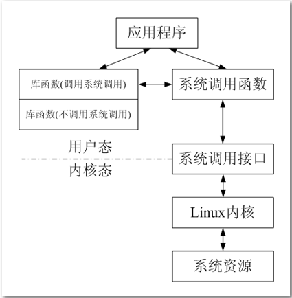
系统调用是需要时间的，程序中频繁的使用系统调用会降低程序的运行效率。当运行内核代码时，CPU工作在内核态，在系统调用发生前需要保存用户态的栈和内存环境，然后转入内核态工作。系统调用结束后，又要切换回用户态。这种环境的切换会消耗掉许多时间 。
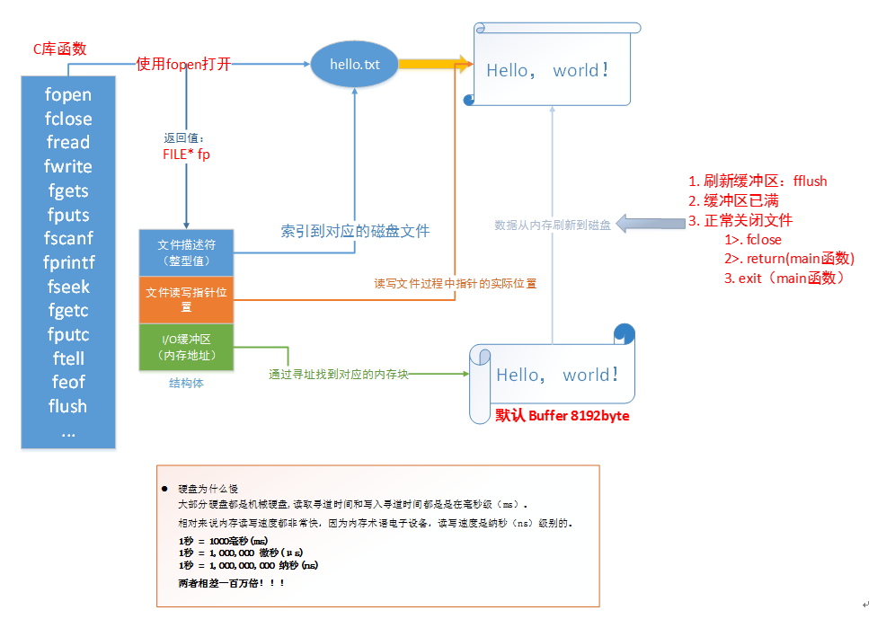
库函数访问文件的时候根据需要，设置不同类型的缓冲区，从而减少了直接调用 IO 系统调用的次数，提高了访问效率。
这个过程类似于快递员给某个区域（内核空间）送快递一样，快递员有两种方式送：
1）来一件快递就马上送到目的地，来一件送一件，这样导致来回走比较频繁（系统调用）
2）等快递攒着差不多后（缓冲区），才一次性送到目的地（库函数调用）
errno 是记录系统的最后一次错误代码。代码是一个int型的值，在errno.h中定义。查看错误代码errno是调试程序的一个重要方法。
当Linux C api函数发生异常时，一般会将errno全局变量赋一个整数值，不同的值表示不同的含义，可以通过查看该值推测出错的原因。
测试程序：
xxxxxxxxxx161//fopen2//errno3//strerror(errno)45int main()6{7 FILE *fp = fopen("xxxx", "r");8 if (NULL == fp)9 {10 printf("%d\n", errno); //打印错误码11 printf("%s\n", strerror(errno)); //把errno的数字转换成相应的文字12 perror("fopen err"); //打印错误原因的字符串13 }1415 return 0;16}
查看错误号：
/usr/include/asm-generic/errno-base.h
/usr/include/asm-generic/errno.h
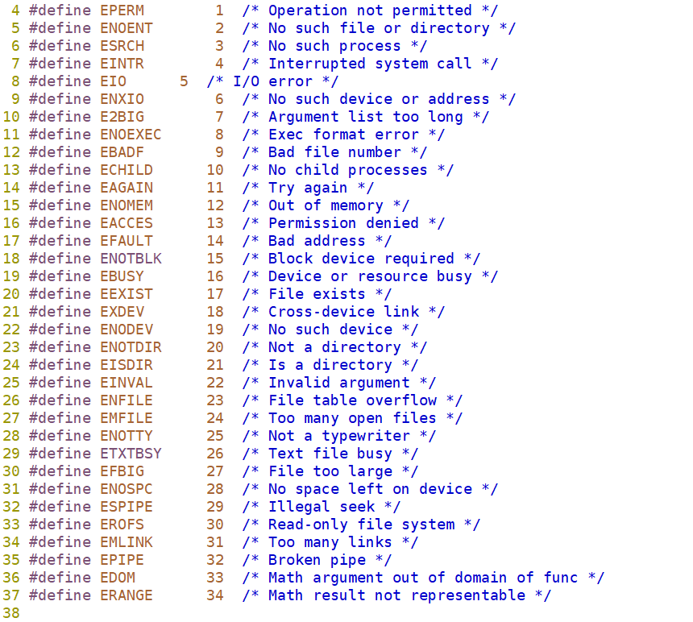
每个进程都会分配虚拟地址空间，在32位机器上，该地址空间为4G 。
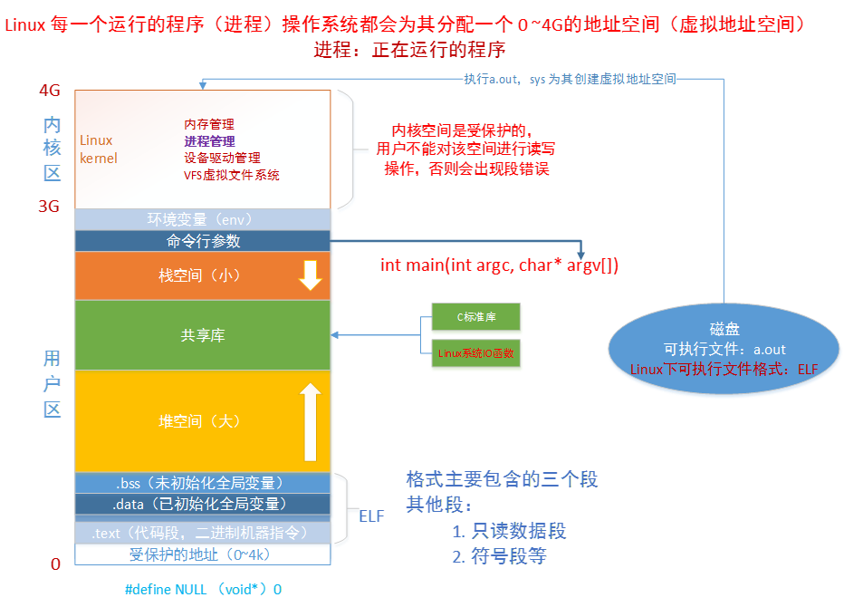
在进程里平时所说的指针变量，保存的就是虚拟地址。当应用程序使用虚拟地址访问内存时，处理器（CPU）会将其转化成物理地址（MMU）。
MMU：将虚拟的地址转化为物理地址。
这样做的好处在于：
在 Linux 的世界里，一切设备皆文件。我们可以系统调用中 I/O 的函数（I：input，输入；O：output，输出），对文件进行相应的操作（ open()、close()、write() 、read() 等）。
打开现存文件或新建文件时，系统（内核）会返回一个文件描述符，文件描述符用来指定已打开的文件。这个文件描述符相当于这个已打开文件的标号，文件描述符是非负整数，是文件的标识，操作这个文件描述符相当于操作这个描述符所指定的文件。
程序运行起来后（每个进程）都有一张文件描述符的表，标准输入、标准输出、标准错误输出设备文件被打开，对应的文件描述符 0、1、2 记录在表中。程序运行起来后这三个文件描述符是默认打开的。
xxxxxxxxxx31//标准输入的文件描述符2//标准输出的文件描述符3//标准错误的文件描述符在程序运行起来后打开其他文件时，系统会返回文件描述符表中最小可用的文件描述符，并将此文件描述符记录在表中。
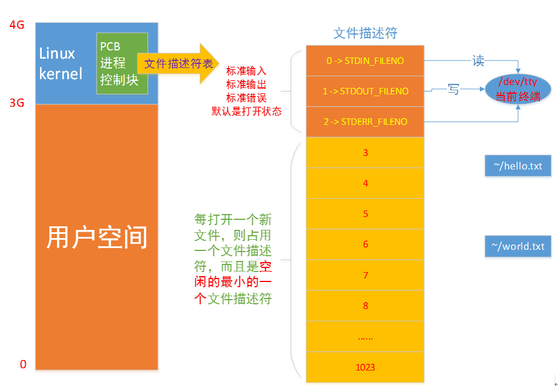
最大打开的文件个数
Linux 中一个进程最多只能打开 NR_OPEN_DEFAULT （即1024）个文件，故当文件不再使用时应及时调用 close() 函数关闭文件。
查看当前系统允许打开最大文件个数：
cat /proc/sys/fs/file-max
当前默认设置最大打开文件个数1024
ulimit -a
修改默认设置最大打开文件个数为4096
ulimit -n 4096
xxxxxxxxxx1515int open(const char *pathname, int flags);6int open(const char *pathname, int flags, mode_t mode);7功能：8 打开文件，如果文件不存在则可以选择创建。9参数：10 pathname：文件的路径及文件名11 flags：打开文件的行为标志，必选项 O_RDONLY, O_WRONLY, O_RDWR12 mode：这个参数，只有在文件不存在时有效，指新建文件时指定文件的权限13返回值：14 成功：成功返回打开的文件描述符15 失败：-1
flags详细说明
必选项：
| 取值 | 含义 |
|---|---|
| O_RDONLY | 以只读的方式打开 |
| O_WRONLY | 以只写的方式打开 |
| O_RDWR | 以可读、可写的方式打开 |
可选项，和必选项按位或起来
| 取值 | 含义 |
|---|---|
| O_CREAT | 文件不存在则创建文件，使用此选项时需使用mode说明文件的权限 |
| O_EXCL | 如果同时指定了O_CREAT，且文件已经存在，则出错 |
| O_TRUNC | 如果文件存在，则清空文件内容 |
| O_APPEND | 写文件时，数据添加到文件末尾 |
| O_NONBLOCK | 对于设备文件, 以O_NONBLOCK方式打开可以做非阻塞I/O |
mode补充说明
1) 文件最终权限：mode & ~umask
2) shell进程的umask掩码可以用umask命令查看
Ø umask：查看掩码（补码）
Ø umask mode：设置掩码，mode为八进制数
Ø umask -S：查看各组用户的默认操作权限
| 取值 | 八进制 | 含义 |
|---|---|---|
| S_IRWXU | 00700 | 文件所有者的读、写、可执行权限 |
| S_IRUSR | 00400 | 文件所有者的读权限 |
| S_IWUSR | 00200 | 文件所有者的写权限 |
| S_IXUSR | 00100 | 文件所有者的可执行权限 |
| S_IRWXG | 00070 | 文件所有者同组用户的读、写、可执行权限 |
| S_IRGRP | 00040 | 文件所有者同组用户的读权限 |
| S_IWGRP | 00020 | 文件所有者同组用户的写权限 |
| S_IXGRP | 00010 | 文件所有者同组用户的可执行权限 |
| S_IRWXO | 00007 | 其他组用户的读、写、可执行权限 |
| S_IROTH | 00004 | 其他组用户的读权限 |
| S_IWOTH | 00002 | 其他组用户的写权限 |
| S_IXOTH | 00001 | 其他组用户的可执行权限 |
xxxxxxxxxx1013int close(int fd);4功能：5 关闭已打开的文件6参数：7 fd : 文件描述符，open()的返回值8返回值：9 成功：010 失败： -1, 并设置errno需要说明的是，当一个进程终止时，内核对该进程所有尚未关闭的文件描述符调用close关闭，所以即使用户程序不调用close，在终止时内核也会自动关闭它打开的所有文件。
但是对于一个长年累月运行的程序(比如网络服务器)，打开的文件描述符一定要记得关闭,否则随着打开的文件越来越多，会占用大量文件描述符和系统资源。
xxxxxxxxxx111ssize_t write(int fd, const void *buf, size_t count);3功能：4 把指定数目的数据写到文件（fd）5参数：6 fd : 文件描述符7 buf : 数据首地址8 count : 写入数据的长度（字节）9返回值：10 成功：实际写入数据的字节个数11 失败： - 1
xxxxxxxxxx1213ssize_t read(int fd, void *buf, size_t count);4功能：5 把指定数目的数据读到内存（缓冲区）6参数：7 fd : 文件描述符8 buf : 内存首地址9 count : 读取的字节个数10返回值：11 成功：实际读取到的字节个数12 失败： - 1
阻塞和非阻塞的概念
读常规文件是不会阻塞的，不管读多少字节，read一定会在有限的时间内返回。
从终端设备或网络读则不一定，如果从终端输入的数据没有换行符，调用read读终端设备就会阻塞，如果网络上没有接收到数据包，调用read从网络读就会阻塞，至于会阻塞多长时间也是不确定的，如果一直没有数据到达就一直阻塞在那里。
同样，写常规文件是不会阻塞的，而向终端设备或网络写则不一定。
【注意】阻塞与非阻塞是对于文件而言的，而不是指read、write等的属性。
以非阻塞方式打开文件程序示例：
xxxxxxxxxx291//read2//EAGAIN78int main()9{10 // /dev/tty --> 当前终端设备11 // 以不阻塞方式(O_NONBLOCK)打开终端设备12 int fd = open("/dev/tty", O_RDONLY | O_NONBLOCK);1314 char buf[10];15 int n;16 n = read(fd, buf, sizeof(buf));17 if (n < 0)18 {19 // 如果为非阻塞，但是没有数据可读，此时全局变量 errno 被设置为 EAGAIN20 if (errno != EAGAIN)21 {22 perror("read /dev/tty");23 return -1;24 }25 printf("没有数据\n");26 }2728 return 0;29}
xxxxxxxxxx1714off_t lseek(int fd, off_t offset, int whence);5功能：6 改变文件的偏移量7参数：8 fd：文件描述符9 offset：根据whence来移动的位移数（偏移量），可以是正数，也可以负数，如果正数，则相对于whence往右移动，如果是负数，则相对于whence往左移动。如果向前移动的字节数超过了文件开头则出错返回，如果向后移动的字节数超过了文件末尾，再次写入时将增大文件尺寸。1011 whence：其取值如下：12 SEEK_SET：从文件开头移动offset个字节13 SEEK_CUR：从当前位置移动offset个字节14 SEEK_END：从文件末尾移动offset个字节15返回值：16 若lseek成功执行, 则返回新的偏移量17 如果失败， 返回-1
所有打开的文件都有一个当前文件偏移量(current file offset)，以下简称为 cfo。cfo 通常是一个非负整数，用于表明文件开始处到文件当前位置的字节数。
读写操作通常开始于 cfo，并且使 cfo 增大，增量为读写的字节数。文件被打开时，cfo 会被初始化为 0，除非使用了 O_APPEND 。
第一步： 安装ctags
deng@itcast:~/linux-4.16.12$ sudo apt install exuberant-ctags
第二步：/usr/include中生成tags文件
切换到/usr/include
deng@itcast:/usr/include$ pwd /usr/include
生成ctags文件
deng@itcast:/usr/include ls -l tags -rw-r--r-- 1 root root 5271877 5月 31 13:00 tags deng@itcast:/usr/include$
第二个tags
deng@itcast:/usr/src/linux-headers-4.10.0-28 sudo ctags -Rn .
第三步: 配置vimrc
在~/.vimrc文件中最后一行添加如下内容：
set tags+=/usr/include/tags
set tags+=/usr/src/linux-headers-4.10.0-28/tags
第四步： 生效vimrc
执行如下命令
deng@itcast:~/linux-4.16.12$ source ~/.vimrc
Ctrl + ] 表示跟踪代码
Ctrl + t 表示回去
deng@itcast:~$ vim -t STDIN_FILENO
1） 有两个互不相干的文件a.c和b.c，编写Makefile之后，make生成可执行文件a和b。
deng@itcast:~/share/3rd/homework/2makefile$ ls a.c b.c Makefile deng@itcast:~/share/3rd/homework/2makefile$ make deng@itcast:~/share/3rd/homework/2makefile$ ls a a.c a.o b b.c b.o Makefile deng@itcast:~/share/3rd/homework/2makefile$ ./a hello a deng@itcast:~/share/3rd/homework/2makefile$ ./b hello b
2) 在1makefile中有如下目录， 编写Makefile生成可执行文件test
源文件如下：
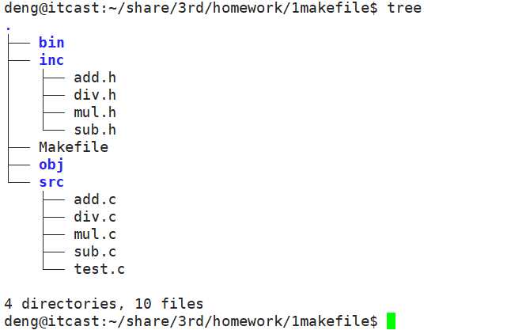
要求：生成的目标文件存储在obj目录中， 生成的可执行文件test存储在bin目录中。
执行结果如下：
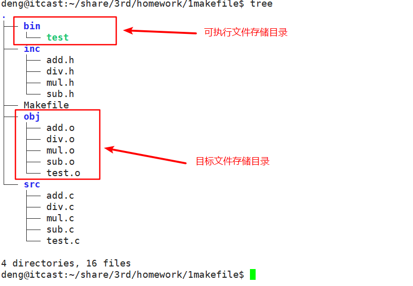
3）使用read和write实现文件拷贝。